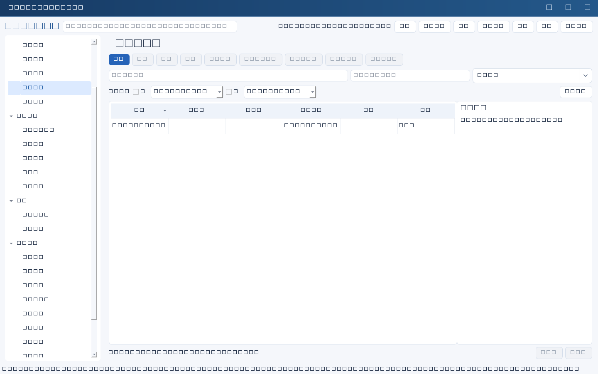
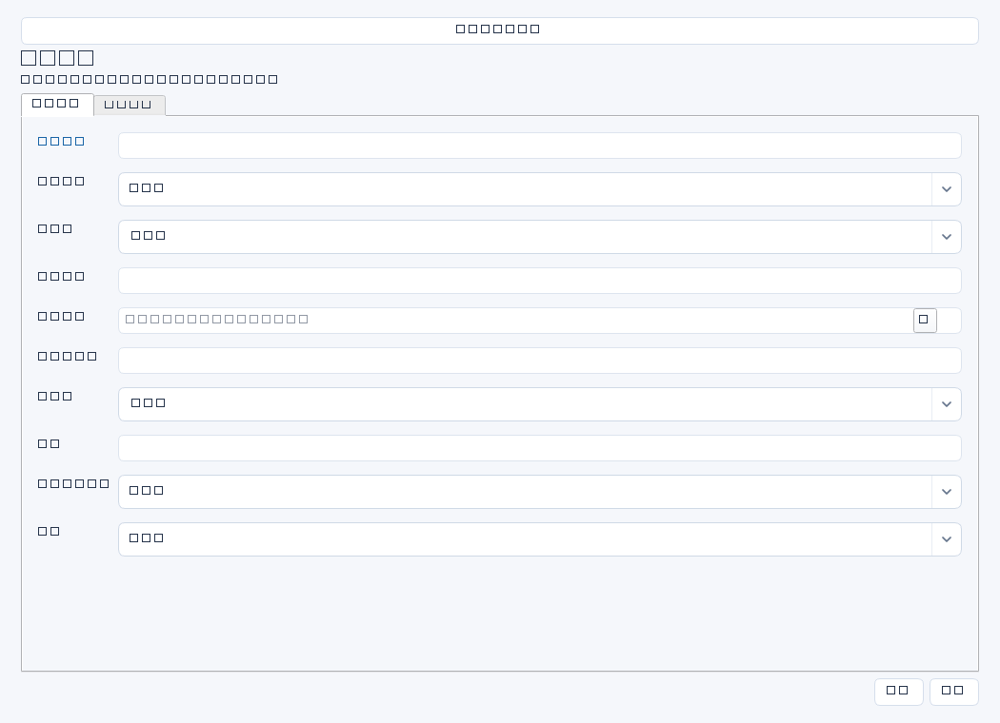

形成IT管理中的待决策事项、方案取舍、资源请求和正式结论记录，适用于采购、风险接受、优先级冲突及变更安排。软件记录决策事实，不替代授权审批。


操作步骤与资料获取
- 从项目阻塞、风险、需求或合同续约提炼真正需要决定的问题，取得事实、成本估算和截止约束。
- 新增决策记录并关联来源，比较至少可行方案及不行动方案的成本、收益、风险和依赖。
- 明确建议、所需预算/人力/窗口、截止日期及不决策影响，把材料提交组织实际决策人。
- 会后按原始纪要登记结论和决策人，需要执行时建立后续任务并关联，保留批准条件与未决事项。
字段逐项说明
| 操作 / 字段 | 详细说明 |
|---|---|
| 名称 | 待决策问题标题，强制非空；建议使用明确选择问题而非泛称“会议记录”。 |
| 来源ID | 关联提出该问题的任一业务记录；非空时强制引用存在且未归档记录，不能直接填外部会议号。 |
| 提出人 | 提出问题并准备材料的人名，不等同决策人。 |
| 方案对比 | 列方案、成本、收益、风险、工期、约束和信息可信度，引用报价或试验依据。 |
| 建议 | 说明推荐方案和理由，以及适用前提；建议尚不是批准结论。 |
| 资源请求 | 列预算币种和口径、人日、人员角色、设备或停机窗口，说明资源来源。 |
| 截止日期 | 最迟需要决定的日期；非空时强制YYYY-MM-DD。 |
| 不决策影响 | 说明延期将造成的业务、费用、合规或交付影响，尽量提供事实依据。 |
| 决策人 | 实际有权作决定的人名；自由姓名文本，不提供在线签名或身份验证。 |
| 结论 | 记录通过/拒绝/暂缓、条件、决策日期和纪要位置；未决时如实写待决，不代替决策人编造。 |
| 后续任务ID | 可选执行跟踪任务；非空时强制引用有效tasks记录，需要先建立实际任务。 |
| 状态 | 用通用状态区分待确认、进行中、已完成等；不存在自动会议审批流或自动任务派发。 |


示例（仅演示）
| 操作 / 字段 | 详细说明 |
|---|---|
| 名称 | ERP备份存储扩容方案选择 |
| 来源ID | |
| 提出人 | 李明 |
| 方案对比 | A新增隔离设备：6万元、2周；B扩容原设备：3万元、1周但隔离不足；报价V2见受控资料库/决策/容量 |
| 建议 | 选择A，以满足隔离恢复目标；前提是机房空间确认 |
| 资源请求 | 人民币含税60000元、运维3人日、一个非生产验证窗口 |
| 截止日期 | 2026-04-20 |
| 不决策影响 | 按近30天增长趋势，5月中旬可用容量将不足30天保留要求 |
| 决策人 | 周总 |
| 结论 | 待正式会议决策；此处尚不代表批准 |
| 后续任务ID | |
| 状态 | 待确认 |
形成闭环
- 取得真实决策纪要后补全结论、条件和证据位置，再调整状态。
- 将执行事项落实到任务并检查交付；结论已形成不等于后续执行已完成。
- 条件改变需要重新决策时记录原因与新依据，保留旧结论历史。
常见误区与边界
- 方案对比只列推荐方案优点，遗漏不行动成本和不确定性。
- 填写决策人姓名就宣称已批准，缺少原始决策材料。
- 把外部会议号填入来源ID会因引用不存在被拒绝；外部索引应写结论或方案对比。